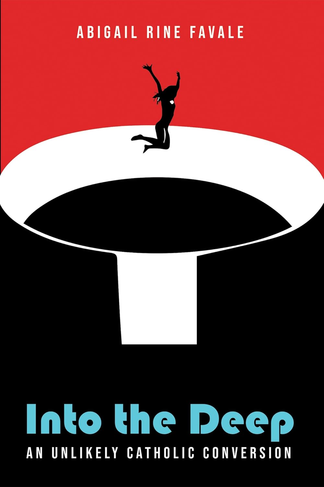

In her memoir, Abigail Favale invites the reader into her spiritual odyssey of life. Starting with her claim of salvation as an Evangelical Christian at the early age of three, she accelerates quickly to early childhood and her insightful journey with evangelicalism. Through her teenage years, she dives into her “part-time religion” and how she diverted from the faith of her childhood, while still striving to hang on. Further developing into young adulthood, she then elaborates on encountering Christian Feminism, which is the school of theology that repurposes the Bible to undermine original structures to the Christian religion. This school of thought ended by setting her on the verge of atheism during her time studying for a Ph.D. in Writing, Women, and Gender at Saint Andrews in Scotland. Finally, while starting a family of her own, working back in Oregon at her alma mater of George Fox, she travels with us through her “Unlikely Catholic Conversion.” Using her personal writing voice of humor and keen insight, Favale writes openly about grappling with the wounds of her past, Catholic sexual morality, the male priesthood, an interfaith marriage, and more.
“The Grotto was foreign to me. Yet again and again, whenever we visited the Lost Boys, I’d quietly sneak to wander the sanctuary–not to pray, a habit I’d given up, and not even to actively contemplate God or truth or what-have you, but simply to wander, to probe the longings of my heart…” (Favale 37).
We first chose this text out of the many, drawn in by the many recommendations we both received from our shared Catholic community. Our readings of this text, however, have different lenses due to our varying experiences with the narrative and setting: I, Stephen, was born and raised Catholic and encountered many of these topics Favale writes about only later in life as I came of age in Oregon. And I, Althea, grew up surrounded by many Catholics in the Philippines, but only recently started exploring and experiencing the beauty and meaning of Catholicism in college after moving to Oregon. With these two different experiences, we are able to speak directly to both sides of the coin.
We reached out to Abigail Favale, asking how Oregon influenced her memoir, and her main insight was regarding the Grotto, the Catholic National Shrine dedicated to Our Sorrowful Mother. Situated amidst a bustling neighborhood in Northeast Portland, the Grotto is an unassumingly beautiful 62-acre shrine that is a significant place for many Oregon residents and visitors. In our correspondence, she describes this sublime garden as the scene that establishes a major Marian theme in the narrative of her life, her entry point to Catholicism. She further explains that “The chapter ‘Via Maria’ is an allusion back to the Via Matris at the Grotto.” The Grotto, which embodies the Oregonian sentiment of holding nature close to the heart, pulls Abigail through its beauty into the sublimity of the Glory in the Sorrow of the Immaculate Mother. Oregonians, ourselves included, have fallen in love with nature just as Abigail fell in love with Mary’s Fiat within that beautiful Grotto garden, unable to fully comprehend the greatness in humility that we behold. In that beauty we are pulled from ourselves into something greater, just as Abigail described her conversion. Abigail has jumped into the deep waters of Catholicism, a faith that I, Stephen, was born into, and I, Althea, have embraced alongside her, and this plunge for Abigail started through the Grotto in Portland, Oregon.
As I attended Masses with my extended family as a kid, I, Althea, was unaware of the mystery that surrounded me. Yet, much like Abigail’s move to Newberg, which intensified her spiritual journey, I, too, have come to encounter the divine beauty and mystery of Catholicism as a college student in Corvallis. As I reflect on my first visit to The Grotto through a three-day pilgrimage, I find myself resonating deeply with Abigail’s spiritual longings, wrestling with my heart, and diving deeper into my conversion journey.
Being raised Catholic caused my heart to take the gifts of the Church for granted too often. In chapters of similar sentiments, I, Stephen, was reflecting on this half-in-half-out mentality that too much of my life was soaked up by, when I came to part three of the book and read a line Favale included from St. Augustine, which became my mantra as I walked, step by step towards the Grotto in the same pilgrimage Althea went on: “Too late have I loved you, O Beauty so ancient, O Beauty so new. Too late have I loved you.”
We were recommended Into the Deep by so many people; yet, after reading it, all we can say is that it should be recommended more.
Born in McCall, Idaho, Abigail Rine Favale lived in various states before attending George Fox University in Newberg, Oregon, where she studied Philosophy. She pursued her Master’s in Women, Writing, and Gender and a Ph.D. in English at the University of St. Andrews in Scotland. She is the author of Into the Deep: An Unlikely Catholic Conversion (2018), The Genesis of Gender (2022), and Our Lady of the Sign (2025). Favale was awarded the J.F. Powers Prize for short fiction in 2017 and has worked as an English professor and the Dean of Humanities at George Fox before moving to teach at the University of Notre Dame in Indiana.
Abigail Favale, Our Lady of the Sign (2025)
- A novel about a college professor who returns to her isolated hometown after achieving everything but happiness.
